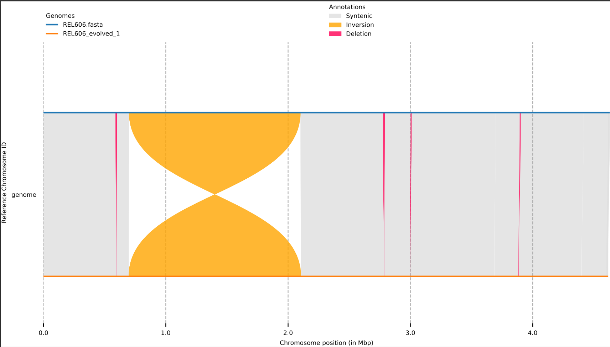
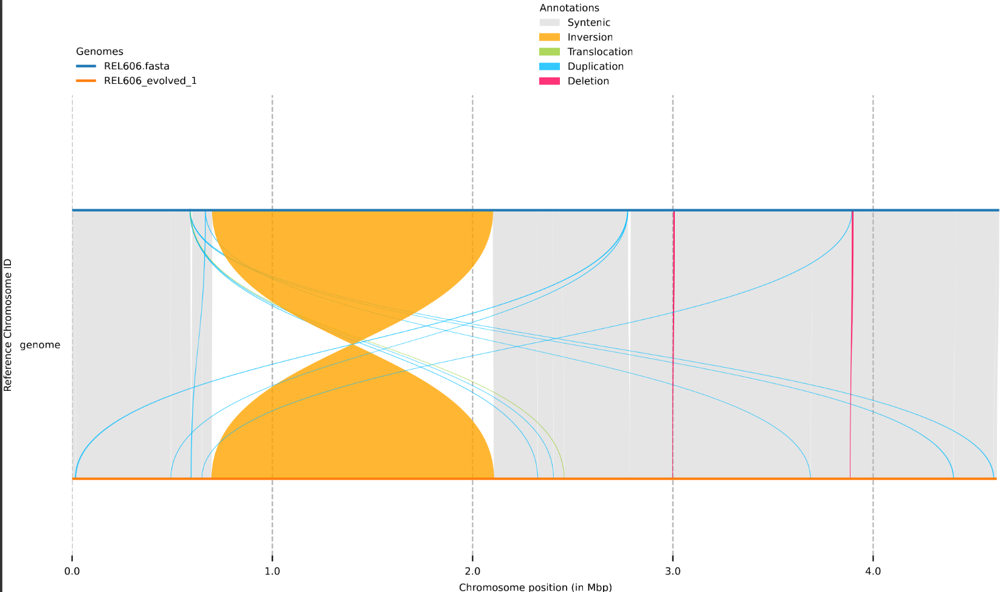
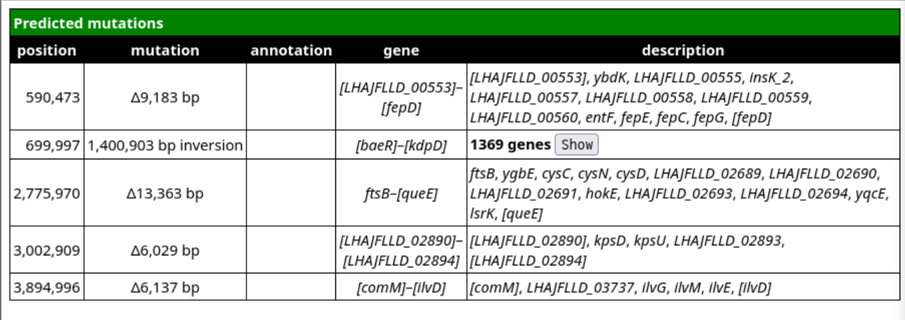
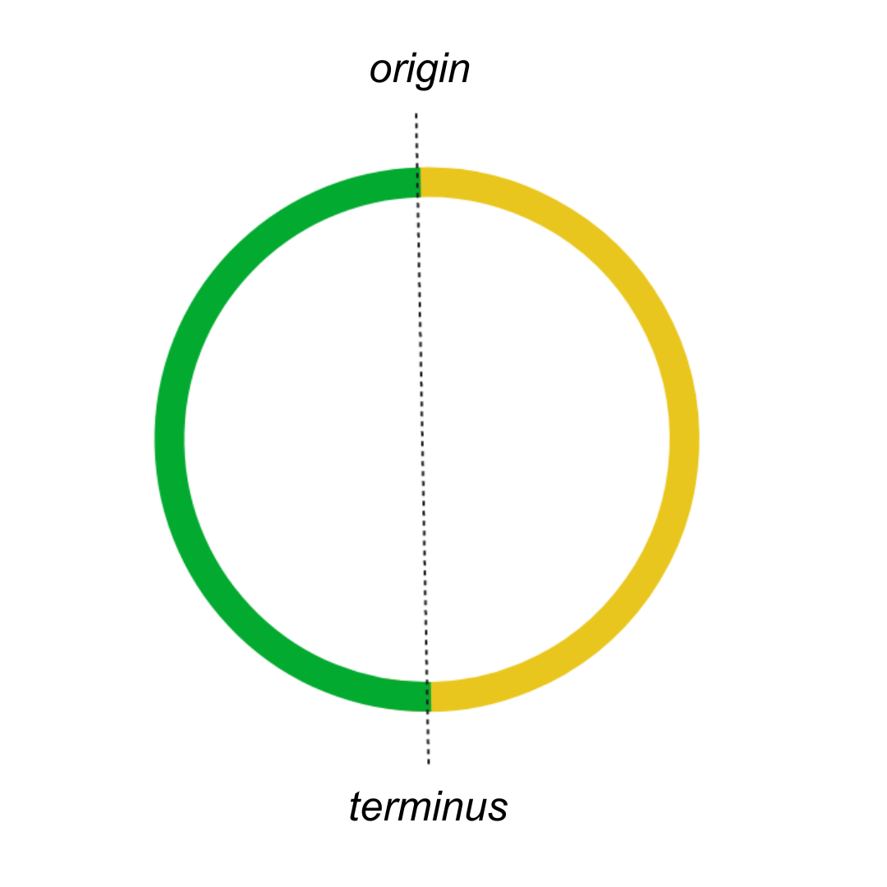
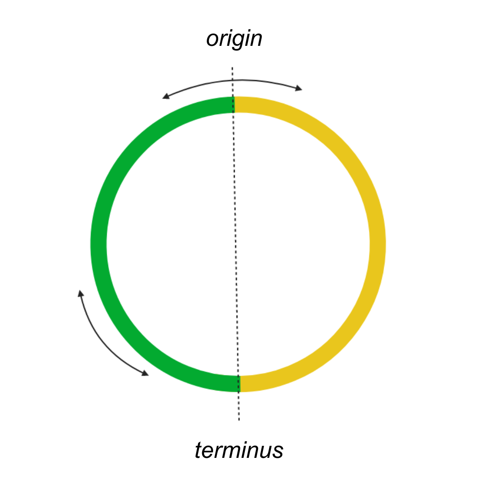
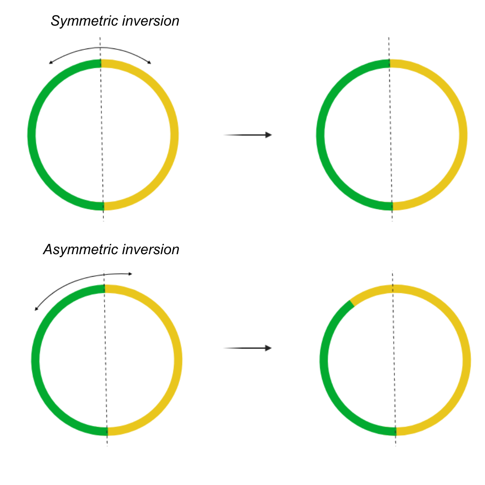

Tutorial
This is a tutorial with example data for seabreeze. Please install the software, create the conda enviroment and activate it first.
To get started, navigate to the root of the seabreeze directory, and copy the example/ directory:
cp -r example/ data/
The newly created data/ folder should look like this:
|---data/
| |
| |---data.csv
| |---ori_dif_sequences.csv
| |---02_genomes/
| | |
| | |---REL606_evolved_1.fasta
| | |---REL606_evolved_2.fasta
| | |---REL606.fasta
For this tutorial, structural variant mutations have been simulated on the E. coli strain REL606 genome using breseq. These mutated genome assemblies are REL606_evolved_1.fasta and REL606_evolved_2.fasta. We aim to identify the structural variants in these assemblies relative to their ancestor, REL606.fasta. These pairwise comparisons to be performed are specified in a csv file called data.csv in the data/ directory. For more information about the valid format of this file, please see the usage page.
To view this csv file:
cat data/data.csv
It should look like this:
| assembly | ancestor | |
|---|---|---|
| REL606 | REL606 | |
| REL606_evolved_1 | REL606 | |
| REL606_evolved_2 | REL606 |
We include a comparison of REL606 to itself as a quality check step, as we do not expect any mutations when a genome is compared to itself.
All of the following commands should be run from the seabreeze root directory. Here, 4 cores have been allocated to run seabreeze but this number can be higher on lower depending on your hardware.
Analyse genome sizes
This command compares the sizes of the assemblies to their specified ancestors in a pairwise manner.
snakemake --use-conda --cores 4 analyse_genome_sizes
The output file generated is data/04_rename_genome/genome_size_stats.csv. Please see output for more information about the fields in this table. This table should look this this:
| assembly | ancestor | size_assembly | size_ancestor | difference | percent_change |
|---|---|---|---|---|---|
| REL606 | REL606 | 4629812 | 4629812 | 0 | 0.0 |
| REL606_evolved_1 | REL606 | 4617111 | 4629812 | -12701 | -0.2743 |
| REL606_evolved_2 | REL606 | 4549910 | 4629812 | -79902 | -1.7258 |
As we expected, there is no size difference when REL606 is compared to itself. We can see that both of the assemblies REL606_evolved_1 and REL606_evolved_2 are smaller than the ancestor.
Find insertion sequences
This command uses ISEscan to annotate partial and full-length IS elements in the genomes.
snakemake --use-conda --cores 4 predict_IS_elements
All of the output generated is stored in data/05_isescan_tables/. This tutorial should generate the following files in this directory:
|---data/
| |---05_isescan_tables/
| | |
| | |---REL606.csv
| | |---REL606_evolved_1.csv
| | |---REL606_evolved_2.csv
| | |---REL606/
| | |---REL606_evolved_1/
| | |---REL606_evolved_2/
Each assembly has a .csv file that describes the locations of IS elements in that genome, and a directory where the additionally files generated by ISEScan are made. For information about interpreting this csv file, we refer users to the official ISEScan documentation.
Predict SVs
This command aligns the assembly-ancestor pairs, predicts structural variants and generates synteny plots.
snakemake --use-conda --cores 4 predict_structural_variants
This will generate the following directories:
|---data/
| |---06_nucmer_alignment/
| | |
| | |---REL606/
| | |---REL606_evolved_1/
| | |---REL606_evolved_2/
| | |
| |---07_syri_output/
| | |
| | |---REL606/
| | |---REL606_evolved_1/
| | |---REL606_evolved_2/
We are primarily interested in a table describing the SVs and the synteny plot. This command also generates other files that may be useful, but are not required. Please see output for information about those files.
Let's look at the SVs for REL606_evolved_1
cd data/07_syri_output/REL606_evolved_1
cat REL606_evolved_1_clean.syri.out | cut --complement -f 4-5
This command prints the tsv file REL606_evolved_1_clean.syri.out to the terminal, while hiding the 4th and 5th columns. These columns show the reference/query sequences for indels, and hence can be quite large. Note that older versions of the UNIX cut command may not support the --complement option, and you may need to either update cut or use other UNIX commands to hide the 4th and 5th columns. You can also view this file with a spreadsheet application, as it a tsv file.
genome 1 590471 genome 1 595344 SYN1 - SYN -
genome 590473 599656 genome 595344 595344 DEL - DEL -
genome 599657 700001 genome 595345 697137 SYN5 - SYN -
genome 699997 2100900 genome 697133 2105267 INV15 - INV -
genome 2100896 2775884 genome 2105263 2784492 SYN7 - SYN -
genome 2775970 2789333 genome 2784492 2784492 DEL - DEL -
genome 2789334 3697156 genome 2784487 3686254 SYN11 - SYN -
genome 3002909 3008938 genome 2998062 2998062 DEL6 SYN11 DEL -
genome 3697154 4415713 genome 3687698 4400119 SYN12 - SYN -
genome 3894996 3901133 genome 3885540 3885540 DEL7 SYN12 DEL -
genome 4415710 4629812 genome 4401562 4617111 SYN13 - SYN -
genome 4615673 4629812 genome 4602972 4617111 SYN14 - SYN -
We refer the user to the official SyRI documentation for information on interpreting this table. You may notice that the reference and query chromosome ID may read as "genome". This is because SyRI attempts to call variants between homologous chromosomes, and hence expects the reference and query ID to be the same string. To prevent this error from occurring, the genomes are renamed to a placeholder string 'genome'.
Let us view the synteny plot REL606_evolved_1.plot.2.pdf in this same directory. It can be opened with any application that allows you to view a PDF.

The ancestor genome is the blue line, and the orange line is the evolved genome REL606_evolved_1. The grey ribbons show syntenic regions. We can see that there was one large inversion (in yellow) and several smaller deletions across the genome (in red).
One of the steps that seabreeze performs is to remove false positive SV calls and misassigned SVs. As an example of what this synteny plot looks like before this processing, we can view the plot REL606_evolved_1.plot.pdf

Two deletions (~0.5Mb and ~2.8Mb) were not correctly called. There also appear to be many small "duplications". These correspond to spurious alignments between the many copies of IS elements, and do not always represent bona fide instances of structural variant mutations. It should also be noted that seabreeze does not track IS transposition events.
Annotate genes in SVs
To annotate the genes present in the deletions, inversions and amplifications, run this command. Make sure you navigate back to the seabreeze root directory before that.
snakemake --use-conda --cores 4 annotate_SV_regions
The primary output generated by this command are a series of html files in
|---data/
| |---12_genome_diff_tables
| | |---html
| | | |---REL606.html
| | | |---REL606_evolved_1.html
| | | |---REL606_evolved_2.html
Let us look at REL606_evolved_1.html as an example. This file can be opened by your web browser application.

This table describes the mutations, their type, location and the genes present in them. For more information on this table, please see breseq documentation.
Predict SV mechanism
Most structural variant mutations occur through recombination between homologous sites and insertion sequences in particular are often involved. This command annotates the insertion sequences at the boundaries of structural variants (for deletions and inversions only) and predicts putative mechanisms.
snakemake --use-conda --cores 4 predict_SV_mechanism
This command generates several files: two summary files deletion_mechanism.csv and inversion_mechanism.csv, and three files for each of the three assemblies:
|---data/
| |---11_annotated_boundaries
| | |---deletion_mechanism.csv
| | |---inversion_mechanism.csv
| | |---REL606_boundaries.csv
| | |---REL606_deletion.csv
| | |---REL606_inversion.csv
| | |---REL606_evolved_1_boundaries.csv
| | |---REL606_evolved_1_deletion.csv
| | |---REL606_evolved_1_inversion.csv
| | |---REL606_evolved_2_boundaries.csv
| | |---REL606_evolved_2_deletion.csv
| | |---REL606_evolved_2_inversion.csv
Let's look at the output for the assembly REL606_evolved_1_deletion.csv, which describes the putative mechanism of the deletions:
| ref_start | ref_stop | query_start | query_stop | tag_3 | L_ref | L_ref_distance | R_ref | R_ref_distance | L_query | L_query_distance | R_query | R_query_distance | Mechanism | Evidence |
|---|---|---|---|---|---|---|---|---|---|---|---|---|---|---|
| 590473 | 599656 | 595344 | 595344 | DEL | 0 | 0 | 0 | 0 | other | NA | ||||
| 2775970 | 2789333 | 2784492 | 2784492 | DEL | 0 | 0 | IS3_61 | -7 | IS3_61 | 7 | IS_mediated | evolved | ||
| 3002909 | 3008938 | 2998062 | 2998062 | DEL | 0 | 0 | 0 | 0 | other | NA | ||||
| 3894996 | 3901133 | 3885540 | 3885540 | DEL | IS3_61 | 0 | 0 | IS3_61 | 0 | IS3_61 | 0 | IS_mediated | full |
We see that two deletions seem to involve IS3_61. For more information about this table, please see the output documentation.
Now let us look at the output for the assembly REL606_evolved_1_inversion.csv, which describes the putative mechanism of the inversions:
| ref_start | ref_stop | query_start | query_stop | tag_3 | L_ref | L_ref_distance | R_ref | R_ref_distance | L_query | L_query_distance | R_query | R_query_distance | Mechanism | Evidence |
|---|---|---|---|---|---|---|---|---|---|---|---|---|---|---|
| 699997 | 2100900 | 697133 | 2105267 | INV | 0 | 0 | 0 | 0 | other | NA |
There was only a single inversion in this assembly, which occurred by an unknown mechanism seabreeze could not predict.
Looking at the summary file deletion_mechnism.csv, we can at a glance look at the mechanism for deletions in all of the assemblies:
| clone | total | between_IS | IS_mediated | other |
|---|---|---|---|---|
| REL606 | 0 | 0 | 0 | 0 |
| REL606_evolved_2 | 4 | 0 | 1 | 3 |
| REL606_evolved_1 | 4 | 0 | 2 | 2 |
Similarly, for the inversions in inversion_mechanism.csv:
| clone | total | between_IS | IS_mediated | other |
|---|---|---|---|---|
| REL606 | 0 | 0 | 0 | 0 |
| REL606_evolved_2 | 2 | 1 | 0 | 1 |
| REL606_evolved_1 | 1 | 0 | 0 | 1 |
Predict replichore and inversion balance
For bacterial genomes that have a single origin and terminus, the genome can be divided into two replichores (halves) demarcated by the origin-terminus axis. It can be useful to know how the lengths of these two replichores differ between the ancestor-assembly pairs. In this figure, the two replichores have been depicted in yellow and green.

The origin-terminus axis can also be used to classify inversions as inter-replichore (if they occur across the axis) or intra-replichore if they are contained within a single replichore. This figure depicts an inter-replichore inversion across the origin, and an intra-replichore inversion within the green replichore.

For inter-replichore inversions, we can describe the symmetry of the inversion across the axis. Asymmetric inversions can cause the length of the two replichores to change.

This step requires user input (in addition to data/data.csv) to specify the sequences of the origin and terminus. For the origin, we recommend the oriC sequence, and for the terminus, we recommend the dif sequence. seabreeze looks for these sequences (or the reverse complement) in the genome for an exact and unique match, and will cause an error if an exact match is not found, or more than one exact match is found. There is no minimum/maximum length requirements for the supplied oriC and dif sequences as long as they meet the above criteria. seabreeze requires these two sequences for each ancestor, and assumes that the sequences have not mutated in the corresponding ancestor. This information is specified in a csv file in data/ori_dif_sequences.csv.
Let us view this file for our example:
cat data/ori_dif_sequences.csv
We should be able to see this table:
| ancestor | ori | dif |
|---|---|---|
| REL606 | GGATCCTGGGTATTAAAA | TCTTCCTTGGTTTATATT |
These sequences are the first few bases of the oriC and dif loci for E. coli. More information about what sequences are acceptable in this table are on the usage page.
We can now run the command from the seabreeze root directory:
snakemake --use-conda --cores 4 predict_replichore_balance
This step generates several output files. First, let us look at the file that describes the lengths of the replichores in the assemblies data/08_reindex_genome_oric/replichore_arms.csv.
| clone | ori | dif | length | arm_1 | arm_2 | ratio | percent |
|---|---|---|---|---|---|---|---|
| REL606 | 0.0 | 2311092.0 | 4629812.0 | 2311092.0 | 2318720.0 | 1.003 | 50.082 |
| REL606_evolved_1 | 0.0 | 1972601.0 | 4617111.0 | 1972601.0 | 2644510.0 | 1.341 | 57.276 |
| REL606_evolved_2 | 0.0 | 1708781.0 | 4549910.0 | 1708781.0 | 2841129.0 | 1.663 | 62.444 |
For more information, about this table, please see the output page. arm_1 and arm_2 describe the length of the two replichores, and percent describes the percent of the total length of the genome that is in the longer replichore. This value is 50 for a perfectly balanced genome, and increases with increasing imbalance. We can see that both REL606_evolved_1 and REL606_evolved_2 are less balanced than REL606.
Now, let's look at the classification of the inversions in the assemblies in data/11_annotated_boundaries/inversion_replichores_long.csv. This file contains a list of all of the inversions across all of the assemblies.
| clone | classification | length | mechanism | symmetry_percent |
|---|---|---|---|---|
| REL606_evolved_2 | across_dif | 1500794 | other | 75.52768734416581 |
| REL606_evolved_2 | across_ori | 1070041 | between_IS | 57.700686235387245 |
| REL606_evolved_1 | across_dif | 1400903 | other | 61.914707870566346 |
We can see that the assembly REL606_evolved_2 had two inversions, one across the terminus and one across the origin, while REL606_evolved_1 had only one inversion across the terminus. The symmetry of each of these inversions is described by the symmetry_percent field, which is the percent of the total length of the inversion that is in the longer arm of the inversion. This value is 50 for a perfectly symmetric inversion and becomes larger as the inversion becomes more asymmetric.